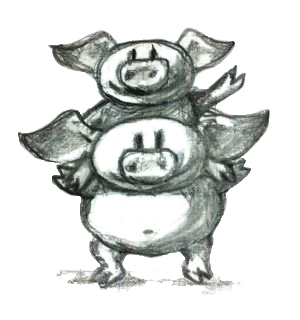

5 CategoryแบบKleisli (Draft)
คุณได้เห็นแล้วในการmode typeต่างๆและfunction pureในฐานะcategory ผมอยากที่จะเอ่ยถึงการมีวิธีในการmodelผลข้างเคียงหรือfunctionที่ไม่pureในทฤษฎีcategory เรามาดูหนึ่งในตัวอย่างแบบนี้ functionที่เก็บ(log)หรือติดตามการดำเนินการของมัน เป็นบางอย่างที่ว่า(ในภาษาแบบimperative)อาจจะเป็นไปได้อย่างมากที่จะถูกเขียนโดยการแปลเปลี่ยนสถานะที่อยู่ในระดับสูงสุด(global) ในแบบที่ว่า
string logger;
bool negate(bool b) {
logger += "Not so! ";
return !b;
}คุณรู้ว่านี่ไม่ใช้functionที่pureเพราะว่าในรูปแบบที่มีการจดจำผลลัพธ์ของมัน(ลองดูได้ในโจทย์ท้าทายของบทที่สาม)ก็จะไม่สามารถที่จะสร้างข้อมูลที่ถูกเก็บไว้(log)ได้ functionนี้มีผลข้างเคียง
ในการเขียโปรแกรมสมัยใหม่ เราพยายามที่จะหลีกหนีจากการใช้สถานะที่เปลี่ยนแปลงได้ในระดับสูงสุด (global mutable state)ให้มากที่สุดเท่าที่เป็นไปได้ ถ้าเป็นแค่เพราะว่าปัญหาที่จะตามมาของconcurrency และคุณจะไม่นำโค้ดแบบนี้เข้าไปในlibaryได้เลย
โชคดีของเราที่มันเป็นไปได้ที่จะทำให้functionนี้เป็นpure คุณแค่ต้องนำlogเข้ามาอย่างเปิดเผยทั้งการเข้ามาและออกไป เรามาทำอย่างนี้โดยการที่เพิ่มargumentที่เป็นstringและมัดoutputทั่วๆไปให้เข้ากับstringที่เก็บlogที่ถูกแก้ไขแล้ว
pair<bool, string> negate(bool b, string logger) {
return make_pair(!b, logger + "Not so! ");
}functionนี้pure มันไม่มีผลข้างเคียง มันreturnคู่เดียวกันในทุกๆครั้งมันถูกเรียกโดยargumentที่เหมือนกันและมันสามารถที่จะถูกจำผลลัพธ์ได้ถ้ามีความจำเป็น แต่ในลักษณะของlogที่เป็นการสะสมไปเรื่อยๆ คุณจะต้องจำประวัติศาสตร์ทั้งหมดที่นำไปสู่การเรียกครั้งนี้ ก็จะมีรายการบันทึกที่แยกออกจากกันสำหรับ
negate(true, "It was the best of times. ");และ
negate(true, "It was the worst of times. ");และต่อๆไป
มันเป็นinterfaceที่ไม่ค่อยดีสำหรับfunctionในlibary ผู้ที่เรียก(functionนี้)สามารถที่จะละเลยstringในtypeของสิ่งที่ถูกคืนมานั้นมันไม่ใช่ภาระที่ใหญ่ แต่มันถูกบังคับให้นำstringเข้ามาในฐานะinputที่อาจจะทำให้เกิดความไม่สะดวก
แต่มีวิธีแบบไหนหรือเปล่าที่สามารถทำแบบเดียวกันแต่ไม่ก้าวก่ายจนเกินไป? วิธีแบบไหนหรือเปล่าที่จะแยกความปัญหานี้ออกไป? ในตัวอย่างที่ง่ายแบบนี้ จุดประสงค์หลักของfunctionnegateคือการที่จะเปลี่ยนBooleanอย่างหนึ่งไปยังอีกแบบหนึ่ง การlogเป็นสิ่งรอง ในแบบนี้ข้อความที่ถูกเก็บที่ขึ้นอยู่กับfunctionนั้นๆ แต่งานในการรวบรวมข้อความต่างๆไปยังสู่logที่ต่อๆกันเป็นความปัญหาที่แยกออกไป เรายังที่จะต้องให้functionผลิตstringแต่เราต้องการที่จะแก้ปัญหานี้ออกจากการสร้างlog นี่ก็คือทางออกที่ประนีประนอม
pair<bool, string> negate(bool b) {
return make_pair(!b, "Not so! ");
}แนวคิดคือว่าlogจะถูกรวบรวมระหว่างการเรียกของfunction
เพื่อที่จะดูว่าการทำแบบนี้เป็นอย่างไร เรามาลองที่จะเปลี่ยนไปดูตัวอย่างที่เสมือนจริงมากว่า เรามีfunctionหนึ่งอยู่ที่นำstringไปยังstringที่เปลี่ยนตัวพิมพ์เล็กไปยังตัวพิมพ์ใหญ่
string toUpper(string s) {
string result;
int (*toupperp)(int) = &toupper; // toupper is overloaded
transform(begin(s), end(s), back_inserter(result), toupperp);
return result;
}และอีกตัวหนึ่งที่แยกstringให้เป็นvectorของstringต่างๆ โดยการแยกมันผ่านช่องระหว่างคำ
vector<string> toWords(string s) {
return words(s);
}งานจริงๆจะถูกทำในfunctionช่วยเหลือ(auxiliary)อย่าง words
vector<string> words(string s) {
vector<string> result{""};
for (auto i = begin(s); i != end(s); ++i)
{
if (isspace(*i))
result.push_back("");
else
result.back() += *i;
}
return result;
}เราต้องการที่จะแก้ไขfunctiontoUpperและtoWordsเพื่อที่ว่าพวกมันจะมีข้อความที่เป็นstringขี่อยู่บนหลังของค่าที่ถูกคืนแบบทั่วๆไป

เราจะ”ประดับ”ค่าที่ถูกคืนมาจากfunctionเหล่านี้ เรามาทำมันในวิธีการทั่วไปโดยการนิยามtemplateที่มีชื่อว่าWriterที่encapsulates pairหนึ่งๆที่ส่วนแรกคือค่าของtypeอะไรก็ได้อย่างAและส่วนที่สองคือstring
template<class A>
using Writer = pair<A, string>;ในที่นี้functionที่ถูกประดับแล้วก็จะเป็น
Writer<string> toUpper(string s) {
string result;
int (*toupperp)(int) = &toupper;
transform(begin(s), end(s), back_inserter(result), toupperp);
return make_pair(result, "toUpper ");
}
Writer<vector<string>> toWords(string s) {
return make_pair(words(s), "toWords ");
}เราต้องการที่จะประกอบfunctionทั้งสองให้เป็นfunctionที่มีการประดับในอีกแบบหนึ่งที่เป็นการทำให้ทุกตัวอักษรเป็นตัวพิมพ์ใหญ่และแยกแต่ละคำออกมา ในขณะเดียวกันก็สร้างlogของการกระทำเล่านี้ นี่คือวิธีการในการทำมัน
Writer<vector<string>> process(string s) {
auto p1 = toUpper(s);
auto p2 = toWords(p1.first);
return make_pair(p2.first, p1.second + p2.second);
}เราได้ทำในสิ่งที่เราต้องการ คือการทำให้การรวบรวมlogต่างๆไม่ใช่สิ่งที่แต่ละfunctionเดี่ยวๆต้องสนใจอีกต่อไป พวกมันสร้างข้อความของตนเองที่ก็จะถูกนำมาต่อกันข้างนอกเพื่อที่จะได้logที่ใหญ่กว่า
ในตอนนี้มาลองจินตนาการว่าทั้งโปรแกรมถูกเขียนในรูปแบบนี้ มันจะเป็นเหมือนฝันร้ายของcodeที่ซ้ำชากและโค้ดที่เต็มไปด้วยข้อผิดพลาด แต่เราคือโปรแกรมเมอร์ เรารู้วิธีการที่จะจัดการกับcodeที่มีความซ้ำชาก โดยการabstract(ทำให้เป็นนามธรรม)มัน! แต่นี่เป็นการทำabstractionที่ทั่วไปสำหรับคุณ เราต้องabstractการประกอบกันของfunctionมันเอง แต่การประกอบกันคือแก่นแท้ของทฤษฎีcategory ดังนั้นก่อนการเขียนโค้ดไปมากกว่านี้ เรามาวิเคราะห์ปัญหานี้จากมุมมองทางcategory
5.1 Categoryนักเขียน
ความคิดของการประดับtypeที่ถูกคืนของมาของหลากหลายfunctionเพื่อที่จะเพิ่มฟังก์ชันการทำงาน(นำมาขี่หลัง)กลายมาเป็นเป็นสิ่งที่มีประโยชน์อย่างมาก เราจะเห็นตัวอย่างในการทำแบบนี้อีกหลายครั้ง จุดเริ่มต้นคือcategoryของtypeที่ทั่วไปๆและfunctionของเรา เราจะยังคงtypeต่างๆให้เป็นobjectแต่จะนิยามmorphismของเราใหม่เพื่อที่จะให้เป็นfunctionที่ถูกประดับ
ตัวอย่างเช่น มาลองดูว่าถ้าเราต้องการที่จะประดับfunctionisEvenที่นำintไปยังสู่bool เราจะเปลี่ยนมันให้เป็นmorphismที่มีfunctionที่ผ่านการประดับแล้วเป็นตัวแทน จุดที่สำคัญคือว่าmorphismนี้ยังที่จะถูกมองให้เป็นลูกศรระหว่างวัตถุ intและboolถึงแม้functionที่ผ่านการประดับจะคืนค่ามาเป็นpair
pair<bool, string> isEven(int n) {
return make_pair(n % 2 == 0, "isEven ");
}โดยกฏของcategory เราควรที่จะสามารถที่จะประกอบmorphismด้วยmorphismอีกตัวหนึ่งที่มาจากวัตถุboolไปยังอย่างอื่นอย่างอะไรก็ได้ โดยเฉพาะการที่เราควรที่จะสามารถที่จะประกอบกับfunctionก่อนหน้านี้ของเราอย่างnegateว่า
pair<bool, string> negate(bool b) {
return make_pair(!b, "Not so! ");
}ชัดเจนว่าเราไม่สามารถที่จะประกอบmorphismสองอย่างนี้ในแบบเดียวกันกับการประกอบfunctionทั่วไปเพราะว่าสิ่งที่เข้ามาและสิ่งที่ออกมานั้นไม่ตรงกัน การประกอบกันของทั้งสองfunctionควรที่จะดูเหมือนแบบนี้
pair<bool, string> isOdd(int n) {
pair<bool, string> p1 = isEven(n);
pair<bool, string> p2 = negate(p1.first);
return make_pair(p2.first, p1.second + p2.second);
}ดังนั้นในที่นี้สูตรสำหรับการประกอบกันของmorphismทั้งสองอันในcategoryใหม่นี้ที่เรากำลังสร้าง
- ใช้งานfunctionที่ผ่านการประดับที่ตรงกันกับmorphismแรก
- นำส่วนประกอบแรกของpairที่เป็นผลลัพธ์และนำมันเข้ามาไปยังfunctionที่ผ่านการประดับที่ตรงกันกับmorphismที่สอง
- นำส่วนประกอบที่สอง(ที่เป็นstring)ของผลลัพธ์แรกและส่วนประกอบที่สอง(ที่เป็นstring)ของผลลัพธ์ที่สองมาต่อกัน
- คืนpairใหม่ที่เป็นการรวมกันของส่วนประกอบแรกของผลลัพธ์สุดท้ายกับstringที่ถูกต่อกันแล้ว
ถ้าเราต้องการที่จะabstractการประกอบกันในฐานะfunctionfunctionลำดับสูงในC++ เราจำเป็นที่จะต้องใช้templateที่ถูกparamterizedโดยtypeสามอย่างที่ตรงกันกับวัตถุทั้งสามในcategoryของเรา มันควรที่จะนำfunctionที่ผ่านการประดับทั้งสองตัวที่สามารถประกอบกันได้ตามกฎของเรา และคืนfunctionที่สามที่ผ่านการประดับ
template<class A, class B, class C>
function<Writer<C>(A)> compose(function<Writer<B>(A)> m1,
function<Writer<C>(B)> m2)
{
return [m1, m2](A x) {
auto p1 = m1(x);
auto p2 = m2(p1.first);
return make_pair(p2.first, p1.second + p2.second);
};
}ในตอนนี้เราสามารถที่จะกลับมายังตัวอย่างก่อนหน้านี้และเขียนการประกอบกันของtoUpperและtoWordsโดยการใช้templateใหม่นี้
Writer<vector<string>> process(string s) {
return compose<string, string, vector<string>>(toUpper, toWords)(s);
}ในที่นี้ได้มีความรุงรังมากมายกับการนำtypeต่างๆเข้ามายังtemplatecompose สิ่งนี้สามารถที่จะหลีกหนีได้ถ้าต่อเมื่อคุณมีcompilerที่รองรับC++14 (C++14-compliant compiler) ที่รองรับfunctioแบบlambdaในแบบgeneralizedคู่กับการคาดเดาของtype (type deduction) (ผมให้creditสำหรับโค้ดชิ้นนี้กับEric Niebler)
auto const compose = [](auto m1, auto m2) {
return [m1, m2](auto x) {
auto p1 = m1(x);
auto p2 = m2(p1.first);
return make_pair(p2.first, p1.second + p2.second);
};
};ในการนิยามใหม่นี้ การเขียนprocessก็จะถูกทำให้ง่ายขึ้นโดย
Writer<vector<string>> process(string s) {
return compose(toUpper, toWords)(s);
}แต่เรายังไม่เสร็จ เราได้ทำการนิยามการประกอบกันในcategoryใหม่ของเราแต่morphism identityคืออะไร? function identityเหล่านี้ไม่ใช่function identity ทั่วไปของเราแน่นอน พวกมันต้องเป็นmorphismจากtypeAไปยังtypeAนั้นหมายความว่าพวกมันคือfunctionที่ผ่านการประดับในรูปแบบของ
Writer<A> identity(A);พวกมันต้องทำตัวเหมือนunitในความหมายของการประกอบกัน ถ้าคุณดูในคำนิยามของการประกอบกัน คุณจะเห็นว่าmorphism identityควรที่จะส่งargumentของมันโดยที่ไม่มีการเปลี่ยนแปลงและส่งstringว่างไปยังlog
template<class A> Writer<A> identity(A x) {
return make_pair(x, "");
}คุณสามารถที่จะลองดูด้วยตัวเองว่าcategoryที่คุณแค่นิยามนั้นเป็นcategoryที่ถูกต้อง โดยเฉพาะการประกอบกันที่มีคุณสมบัติของการเปลี่ยนหมู่อย่างชัดเจน ถ้าคุณติดตามส่วนประกอบแรกของแต่ละpair มันก็เป็นแค่การประกอบกันของfunctionทั่วๆไปก็เท่านั้น ที่ก็มีคุณสมบัติของการเปลี่ยนหมู่ ตัวประกอบที่สองที่ถูกนำมาต่อกันและการต่อกันนั้นก็มีคุณสมบัติของการเปลี่ยนหมู่
ผู้อ่านที่มีไหวพริบอาจจะสังเกตได้ว่ามันอาจจะง่ายมากที่จะgeneralizeการสร้างแบบนี้ไปยังmonoidอะไรก็ได้ไม่ใช่แค่monoidของstring เราก็อาจจะใช้mappendข้างในcomposeและmemptyในidentity (แทนที่ของ+และ"") ไม่เหตุผลในการจำกัดตัวเองในไว้ที่การlogต่างๆที่เป็นstring นักเขียนlibraryที่ดีควรที่จะสามารถแยกแยะข้อจำกัดที่ขั้นต่ำที่สุดที่จะทำให้libaryนั้นทำงานได้ ในที่นี้สิ่งที่จำเป็นต่อlibaryของการloggingก็คือว่าlogต้องมีคุณสมบัติทางmonoid
5.2 WriterในHaskell
ในการทำแบบเดียวกันในHaskellก็อาจจะมีความรวบรัดมากกว่าและเราก็จะได้รับความช่วยเหลือจากcomplierมากขึ้น เรามาเริ่มจากการนิยามtypeWriterว่า
type Writer a = (a, String)ในตอนนี้ผมก็แค่นิยามชื่อแฝง(alias)ของtypeซึ่งมีความเท่ากันกับtypedef(หรือusing)ในC++ typeWriteถูกparameterizedโดยตัวแปรtypeaและเท่ากันกับpairของaและString ไวยากรณ์ของpairนั้นมีความเรียบง่ายคือเป็นแค่สองitemในวงเล็บที่ถูกแยกโดยลูกน้ำ
morphismของเราคือfunctionจากtypeอะไรก็ได้ไปยังtypeWriterบางอย่าง
a -> Writer bเราจะประกาศการประกอบกันในฐานะoperator infixที่ดูตลกและในบางครั้งถูกเรียกว่า”ปลา”
(>=>) :: (a -> Writer b) -> (b -> Writer c) -> (a -> Writer c)มันคือfunctionที่มีargumentสองอันโดยในแต่ละfunctionก็เป็นตัวของตนเองและคืนfunctionกลับมา arugmentแรกก็มีtypeเป็น(a -> Writer b) ตัวที่สองเป็น (b -> Writer c) และผลลัพธ์คือ (a -> Writer c)
นี่คือนิยามของของoperator infix ที่argumentทั้งสองm1และm2ที่โผล่มาในทั้งสองข้างของเครื่องหมายที่ดูน่าสงสัย (fishy)
m1 >=> m2 = \x ->
let (y, s1) = m1 x
(z, s2) = m2 y
in (z, s1 ++ s2)ผลคือfunctionแบบlambdaที่มีargumentเดี่ยวอย่างx lambdaนี้ถูกเขียนด้วยbackslash(คิดสะว่าคืออักษรกรีก\(\lambda\) ที่ถูกตัดขา)
expressionของletอนุญาตให้คุณประกาศตัวแปรช่วย ผลของการเรียกไปยังm1นี้คือpairของตัวแปร(y, s1) ที่ถูกจับคู่รูปแบบแล้ว และผลขอการเรียกไปยังm2คู่กับargumentyจากรูปแบบแรกก็ถูกจับคู่กับตัวของ(z, s2)
มันเป็นเรื่องทั่วไปในHaskellที่จะทำการจับคู่รูปแบบแทนที่จะใช้accessors(ตัวเข้าถึง)ในแบบที่เราทำในC++ แต่นอกเหนือไปจากนี้ก็มีความตรงกัน(correspondence)ในการเขียนของทั้งคู่ที่แบบที่ค่อนข้างตรงไปตรงมา
ค่าทั้งหมดของexpressionletนั้นถูกระบุไว้ในส่วน(clause)ของinในที่นี้มันคือpairที่ส่วนประกอบแรกคือzและส่วนประกอบที่สองคือการต่อกันของstringสองอย่างs1++s2
เราก็จะนิยามmorphism identityสำหรับcategoryของเราแต่ด้วยเหตุผลที่จะชัดเจนมากขึ้นหลังจากนี้เราจะเรียกมันว่าreturn
return :: a -> Writer a
return x = (x, "")เพื่อให้มีความสมบูรณ์เราก็จะมีfunctionที่ผ่านการประดับอย่างupCaseและtoWordsในรูปแบบของHaskell
upCase :: String -> Writer String
upCase s = (map toUpper s, "upCase ")
toWords :: String -> Writer [String]
toWords s = (words s, "toWords ")functionmapนั้นตรงกันกับtransformของC++ ที่มันนำfunctionกับตัวอักษรอย่างtoUpperไปใช้ในstrings functionช่วยเหลืออย่างwordก็ถูกนิยามในlibrary Preludeมาตรฐาน
สุดท้ายแล้วการประกอบกันของfunctionทั้งสองสามารถทำได้ด้วยความช่วยเหลือจากoperatorปลา
process :: String -> Writer [String]
process = upCase >=> toWords5.3 CategoryแบบKleisli
คุณอาจจะเดาได้ว่าผมไม่ได้ประดิษฐ์categoryนี้ในปัจจุบันทันด่วน categoryนี้คือตัวอย่างของสิ่งที่เรียกว่าCategory Kleisli ซึ่งก็คือcategoryที่มีฐานเป็นmonad เรายังไม่พร้อมที่จะพูดเกี่ยวกับmonadแต่ผมอยากที่จะให้คุณลองเห็นในสิ่งที่มันสามารถทำได้ ในวัตถุประสงค์ที่เล็กน้อยของเรา Category Kleisliมีtypeของภาษาโปรแกรมที่เป็นพื้นหลังในฐานะวัตถุ morphismจากtypeAไปยังtypeBคือfunctionที่ไปจากAสู่typeที่สร้างมาจากBโดนผ่านทำการประดับในรูปแบบใดรูปแบบหนึ่ง categoryแบบKleisliแต่ละตัวก็นิยามวิธีการประกอบของmorphismแบบนี้ในแบบของมันเองรวมไปถึงmorphism identityที่ขึ้นอยู่กับการประกอบนั้น (หลังจากนี้เราจะเห็นว่าคำอย่าง”การประดับ”ที่ไม่ค่อยที่จะตรงนักสอดคล้องกันกับแนวคิดของendofunctorในcategoryหนึ่ง)
Monadผมใช้โดยเฉพาะในฐานะฐานของcategoryในpostนี้ถูกเรียกว่าmonad writer และมันถูกใช้ในการloggingหรือติดตาม(tracing)การดำเนินการของfunction มันก็เป็นตัวอย่างของกลไกที่กว้าง(general)มากกว่านี้สำหรับการฝัง(embedding)ผลลัพธ์ต่างๆ(effect)ในการคำนวนแบบpure คุณได้เห็นแล้วว่าก่อนหน้านี้ว่าเราสามารถที่จะmodel typeต่างๆในภาษาของโปรแกรมและfunctionข้างในcategoryของset(โดที่เราไม่สนใจbottomเหมือนเคย) ในที่นี้เราได้ขยายmodelนี้ไปยังcategoryอื่นที่แตกต่างกันเล็กน้อย categoryที่morphismมีfunctionที่ถูกประดับแล้วเป็นตัวแทน และการประกอบกันนั้นทำได้มากกว่าแค่ส่งoutputของfunctionหนึ่งๆไปยังinputของอีกfunction มันกลับเป็นว่านี่คือระดับของความอิสระอย่างแน่นอนที่ทำให้มันเป็นไปได้ในการที่จะให้ความหมายเชิงสัญลักษณ์ (denotational semantics)อย่างง่ายๆกับโปรแกรมต่างๆที่อยู่ในภาษาแบบimperativeที่ก็ในแบบดั้งเดิมถูกเขียนโดยการใช้ผลข้างเคียง
5.4 โจทย์ท้าทาย
functionที่ไม่ได้ถูกนิยามสำหรับทุกๆค่าที่เป็นไปได้ของargumentของมันจะถูกเรียกว่าfunctionบางส่วน (partial function) มันไม่ใช่functionในทางคณิตศาสตร์จริงๆดังนั้นมันจึงๆไม่เข้ากับแม่พิมพ์ทางcategoryแบบมาตรฐาน แต่มันสามารถมีfunctionที่return typeที่ถูกตกแต่งแล้วอย่างoptionalเป็นตัวแทนได้เช่น
template<class A> class optional {
bool _isValid;
A _value;
public:
optional() : _isValid(false) {}
optional(A v) : _isValid(true), _value(v) {}
bool isValid() const { return _isValid; }
A value() const { return _value; }
};ตัวอย่างเช่นนี่คือการเขียนfunctionที่ถูกตกแต่งแล้วอย่างsafe_root
นี่คือโจทย์ท้าทาย
- ลองสร้างcategoryแบบKleisliสำหรับfunctionบางส่วน(ลองนิยามการประกอบกันและidentity)
- ลองเขียนfunctionที่ถูกตกแต่งแล้วอย่าง
safe_reciprocalที่returnตัวผกผันการคูณ(reciprocal)ของargumentของมันถ้ามันแตกต่างจากศูนย์ - ลองประกอบfunctionต่างๆอย่าง
safe_rootและsafe_reciprocalเพื่อเขียนsafe_root_reciprocalที่คำนวนsqrt(1/x)ในที่ที่เป็นไปได้